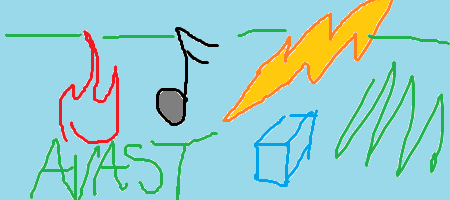

Scotland's music scene is an interesting one. Much like Canada's obvious attempts and cultural differences to the majority of it's south of the boarder cousins in America, Scotland, generally disenfranchised and uninterested in what England has to offer, comes completely into it's own and offers some really stunning, unhinged music.
As is the current trend set by incredible acts like Chicago's Maps and Atlases, or the closer to home Meet Me in St. Louis (although not that much, hailing from Guildford, which is as about as South as you can go) the currently genuinely exciting movement in music is the bringing together of the technicalities of Post-Hardcore, the general atmosphere and song writing of Emo, and the wonderfully charming melodies of a good indie-pop song